互斥量｜FreeRTOS 源码详解 P09¶
清理式忠实讲稿，保留讲述顺序与讲者主张。原片范围 00:00–31:00.870，来源 P09。 原视频640×360，代码小字局部不清；正文仅清理可由上下文及画面确认的识别错误，不据模糊截图补造代码。设备名、讲者特殊表述在相邻位置标注。浏览器file协议受限，桌面与窄屏布局及图片缩放、时间链接交互未实测。
从信号量看队列的特殊情况¶
我们来介绍一下互斥量的内部机制。互斥量实际上是一种高级的信号量，而信号量又是特殊的队列，所以我们先简单地介绍一下信号量。
信号量前面也说了，它是特殊的队列。它特殊在哪呢？特殊在它的 size——每个有多大——这个 size 是 0。也就是说，它没有数据段。它就是这样一个情况：没有数据段，其他的都和队列是一样的。
这边我们也来看一下，这是创建二值信号量的一个宏函数。我们创建二值信号量就用这个函数，也可以看到它的底层，就是在调用这个通用的队列创建函数。二值信号量的 length，也就是传进去的第一个参数，是 1；然后它的 size 是 0，第二个参数是 0。这也就印证了我们刚才说的：它的 size 是 0。
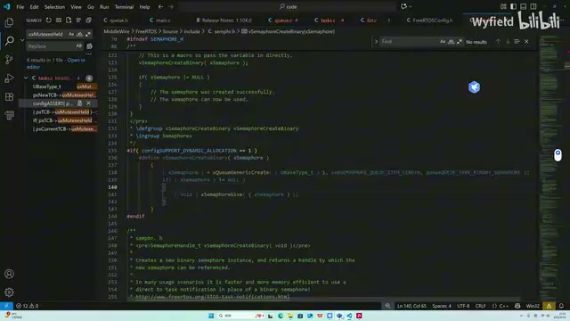
二值信号量创建宏及底层队列创建调用（原视频640×360，小字局部不清，截图用于定位原画面） · 原片 01:00
包括信号量的放入与取出，其实底层都是用队列的函数。这边要往信号量里放，底层也是调用队列通用的 Send 函数。你看它第一个参数，本质上就是个队列的头节点；第二个参数是一个指针。当我们把它用作队列的时候，它指向的是我们要传到队列里面的数据。但是因为信号量没有数据段，我们传 NULL 就行了，内核帮我们传好了。然后包括它的一个 Take，从这个信号量里面取东西，底层也是在调用队列的函数，这个我们之前都讲到了。同样的，用来接收队列里面数据的指针也是 NULL。当它用作信号量时，我们这些传的都是 0。
它内部的细节就不讲了，因为这个 Generic Receive 函数上节课也都说得很清楚了。大家感兴趣的话，可以把信号量这个特殊情况自己看一下。
共用 I²C 时的互斥¶
二值信号量的作用，我们主要是用来同步。假设说 Task A 和 Task B，它们都会使用同一个 I²C。Task A 可能是用来驱动屏幕的，Task B 可能是用来给这个设备写数据的〔此处设备名识别不清，原转写为“一方”，不据此补定型号〕。因为 I²C 的时序要求很高，它在写的时候，肯定是不能给别的任务打断的。
当多个线程共用同一个有限资源的时候，就要用到互斥，对吧？互斥，就是某个比较紧张的资源有一个人在使用的时候，其他几个进程不能使用。这就是互斥的“斥”，互相排斥。
假设 Task A 首先抢到了 I²C，它就会在这边把二值信号量拿过来。前面也说了，二值信号量的 length 最多只能放 1。初始的话，后面也会说，它在创建的时候会变成一个 1。这边 Take 拿过来之后，就会从 1 变成 0。
取到了之后，因为取成功了，就可以正常进行，在这边使用 I²C，可以驱动屏幕。那 Task B 呢？假如说它走到这里来，
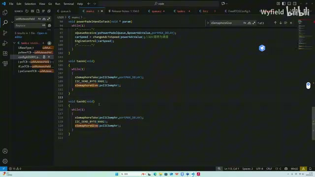
Task A、Task B 中 Take、I2C 操作与 Give 的示例（原视频640×360，小字局部不清，截图用于定位原画面） · 原片 04:00
此时 Task A 还在用 I²C。因为这个二值信号量，或者说这个队列，它的 Messages Waiting 已经从 1 变成 0 了，那它这里就写失败了。写失败了，它就阻塞了，进入这个 Waiting to Send 的列表下，乖乖等着。〔讲者此处的“写失败／Waiting to Send”按原讲述保留。〕
一直要等到 Task A 把 I²C 使用完毕之后，再调用这个信号量 Give，把 I²C 的使用权限、这个信号量还过去之后，它才能够唤醒，然后再继续使用 I²C，发送它想要发送的数据。所以，这就是二值信号量的一个作用：互斥。
为什么还需要互斥量：优先级反转¶
那么，我们还有互斥量。既然二值信号量已经可以实现互斥的功能了，那我们为什么还要互斥量呢？大家应该也都听过，其中涉及到一个优先级反转的问题。简单来复习一下什么是优先级反转。
我们假设一种情况：Task B 优先抢到了 I²C，现在资源在 Task B 这里。紧接着它来到这里，开始使用 I²C。使用到一半，这时候有一个 Task C 插进来了，它开始执行了。Task C 可能执行的时间比较长，同时它的优先级又比 Task B 要高。
这就导致 Task B 会卡在这里。因为 Task C 的优先级比它高，Task B 一直没有执行的机会，这边的 I²C 它就用不完。它用不完，那 Task A 就一直卡在这，没法被唤醒了。
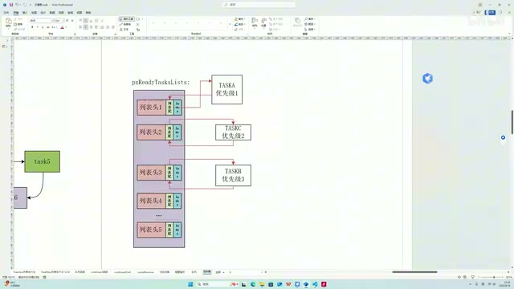
A、C、B 三个任务的就绪优先级示意（原视频640×360，小字局部不清，截图用于定位原画面） · 原片 06:00
那么这时候就遇到一个问题了：Task A 的执行，竟然要看 Task C 的心情。
也就是说，优先级低的 Task C，它的存在竟然把优先级更高的 Task A 给阻塞了。这个就是“下克上”的一种行为。这就是使用二值信号量来做互斥机制的这样一个缺陷。
所以这时候就引入了一个互斥量，一个更高级的二值信号量，来解决这个问题。互斥量解决这个问题的方法，是采用一个优先级继承的机制。
优先级继承与归还后的恢复¶
什么是优先级继承呢？就是现在 Task B 占有这个互斥资源，或者用刚才的例子来举例，就是占有那个 I²C。然后 Task A 想要用这个 Queue Receive 函数，去获取互斥量资源。
由于这个互斥量现在被 Task B 所持有，所以 Task A 对互斥量的获取操作肯定是失败的。一旦失败，内核这里就会比对 Task A 和 Task B 两个任务的优先级。
一旦内核检测到当前持有这个互斥量的任务，也就是 Task B，它的优先级比想要获取这个互斥量而不成功的任务的优先级要低，那么它就会临时对 Task B——就是当前持有这个互斥量的任务——进行一个提拔，把它的优先级提上来，提到跟想获取互斥量而不成功的这个任务的优先级一样。
也就是这样一个情况：内核发现 Task A 拿互斥量拿不到，B 的优先级又比 A 要低。为了防止出现刚才那个“下克上”，也就是优先级反转的缺陷，它就把 Task B 提拔到和 Task A 一样的位置了。那就保证 Task B 可以执行，对不对？可以快速地、赶快执行完，把 I²C 释放完，然后让 Task A 来用。
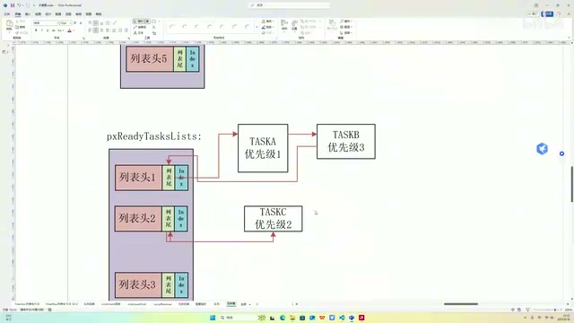
Task B 被临时放到 Task A 所在优先级的示意（原视频640×360，小字局部不清，截图用于定位原画面） · 原片 08:24
同理，你既然把它临时提拔上来了，那等这个互斥量用完了之后，这一切肯定要回归正常。Task B 肯定要回到它该回去的位置。因此，在 Task B 归还互斥量，也就是调用 Queue Send 函数成功的时候，就会把它当前的优先级和这个任务被创建时，也就是一出生的初始优先级，进行一个对比。一旦不一样，就让它当前的优先级和初始优先级一致，也就是又回到了这个状态。大致就是这样一个逻辑。
我们刚才也说了，优先级继承就是两句话：当获取互斥量不成功时，优先级反转，对吧？让优先级更低、同时又占有资源的那个人升官，临时升官，让他能快速用完这个资源再还给我。第二个，当发送互斥量成功时，就是有任务把互斥量归还回去，它要优先级恢复。它检测一下自己现在是不是被临时升官了，如果是临时升官了，就要回到过去的位置。
那么在技术细节上，它是怎么实现的呢？一旦我们把 Mutex，就是互斥量的那个宏定义打开，有两个结构体会因此发生一些变化。
TCB 与队列头增加、复用的字段¶
首先是 TCB 这个结构体，它会多出两个成员。一个叫 Base Priority（uxBasePriority），直译过来就是基本优先级，也就是这个任务被创建时的优先级。第二个是 uxMutexesHeld，代表这个 TCB 所代表的任务，持有了几个互斥量。
然后队列头这个结构体，它的变化是：首先它的 size 是 0，对吧？互斥量本质上还是信号量，只是高级一点，它肯定是没有数据段的。再一个，它的 length 是 1。1 代表这个资源能用，0 代表这个资源不能用，它是一个二值状态，所以 length 是 1。
再一个，初始化的时候，你调用 Mutex Create 函数，就是来创建一个互斥量的时候，这个 Messages Waiting（uxMessagesWaiting）——就是已经放了几个的这个变量——它是 1。初始的时候，这个资源是谁都能用的，代表有资源。
然后我们前面讲到 pcHead 和 pcTail，代表数据段头和数据段尾。互斥量都没有数据段，所以这两个就另有他用。pcTail 不再表示数据尾了，它会指向一个 TCB。它所指向的 TCB，就是当前占有这个互斥量的任务；这个 TCB 所代表的，就是当前占有这个互斥量的任务。我们通过查询这根指针，就能找到当前这个互斥量是被谁、被哪个任务所占有。
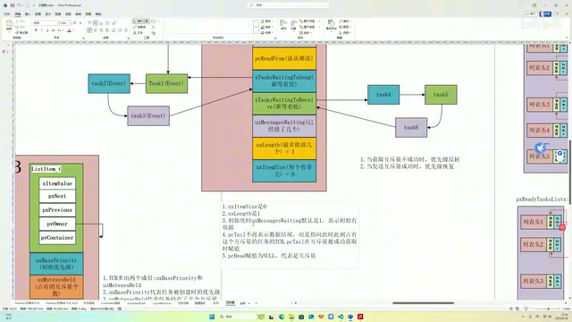
队列头、TCB 与持有者关系的结构图（原视频640×360，小字局部不清，截图用于定位原画面） · 原片 11:00
如果它谁都没指，是一个 NULL，就代表谁都不占有它。然后 pcHead 也不指向任何地方；pcTail 指向 NULL，pcHead 指向 NULL，就代表是互斥量。源码里面都是通过把 pcHead 和 NULL 进行对比，来判断它是不是互斥量的。
所以刚才就说了，互斥量高级的地方在于它有一个优先级继承。优先级继承进一步说，就是这两个特质。实现这两个特质，内部有一些技术细节，主要就是 TCB 和 Queue 这两个数据结构上的区别。同时等会儿我们看源码，源码里面也会有一些不同。总体来说，技术细节都列出来了，接下来就去源码里把这些都印证一下、都找出来。
从创建函数印证初始化¶
然后我们来看互斥量的创建函数。它还是在调用队列的创建来完成的。首先 length 是 1，代表要么有、要么无：0 是无，1 是有。然后 size 是 0，对吧？它是一个没有数据段的队列，不需要数据段。这就是第一点。把这两个 1 和 0 传进去，这两个特性就实现了。
然后这边是互斥量的初始化函数，看它干了啥。就是这里，Mutex Holder（pxMutexHolder）。这个 Holder 是谁？我们来看一下。Holder 是个宏，它就是 Tail，数据段尾。我们刚才说了，这个尾如果指向某个地方，它所指向的地方就会是一个 TCB，然后这个 TCB 就是当前持有互斥量的任务。
初始化的时候，这个互斥量谁都不属于，肯定是空，对吧？然后这个 Queue Type（uxQueueType），它是谁？它也是个宏，它是 Head，对吧？这边也说了，Head 要赋值为 NULL，那我就给这个宏，它也是 NULL。后面的代码就会查这个 pcHead，来确定它是不是互斥量。
然后这里，当我们这个互斥量作为一个递归型互斥量的时候，这个变量会用到。其实我们互斥量懂了，递归型互斥量就很简单。
然后就是对这一点：往互斥量里面发了一个数据，就是印证第三点。它往里面发了一个东西，那么此时 Messages Waiting，就是当前有几个的这个变量，就不是零了。发了一个就是一，代表一开始这个资源是有的，是一个有的状态，谁都可以持有。初始化这一块，就大致带大家看了一下。
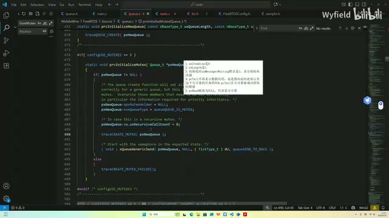
互斥量初始化函数中的持有者、类型与初始发送（原视频640×360，小字局部不清，截图用于定位原画面） · 原片 14:48
任务创建时的两个初值¶
然后就是这几个点，TCB 里面相关的一些特性。是从 Task Create 开始，这个函数还没给大家讲，我打算放最后讲。等一切讲完了，我们来看看第一个任务是怎么跑起来的。
就给大家找一下吧，在这，在初始化这里。好，在这，你看，这个是个宏。一旦把这个宏开关打开，就是有互斥量了，需要用到互斥量了。那这边是 Base Priority，对吧？它代表任务被创建时的优先级，所以创建的时候就把它进行赋值。然后这个变量代表持有了几个互斥量，你刚创建的时候肯定啥都没有，那肯定是零。这个特性也讲完了。
Task B 成功取得互斥量¶
然后我们就模拟一下刚才说的 A、B、C 这三个任务的情况，对着源码，把技术细节捋一下。首先肯定是 Task B 调用这个 Queue Receive 函数成功了。调用成功，就来到这。
基本上的区别，首先这里有一个：因为我们的 size 是 0，所以就不存在什么 memcpy 传输数据的事情，直接就跳出来。其他这边都一模一样。
然后你是用作互斥量的时候，这个 Peeking（xJustPeeking）肯定是 False。你不能只看一下，必须拿走，所以肯定是走这个分支。唯一的区别就在这，多一些操作。
你看这个 Mutex 宏打开之后，它首先就会判断 Head 是不是 NULL。就是这里，截个图，就这里判断一下 Head 是不是 NULL。pcHead 赋值为 NULL，代表是互斥量。现在判断确实是互斥量，就会来到这里。
这里是在做一个什么事呢？首先，让这个 Tail 指针——因为 Tail 指针会指向此时此刻占有互斥量任务的 TCB——就把 pcTail 指针的指向改一下。同时还会干啥呢？同时还会让这个 Mutexes Held 变量，就是代表任务持有了几个互斥量的变量，让相应 TCB 里面这个变量再加加。因为你成功持有了，所持有的互斥量肯定要自增。
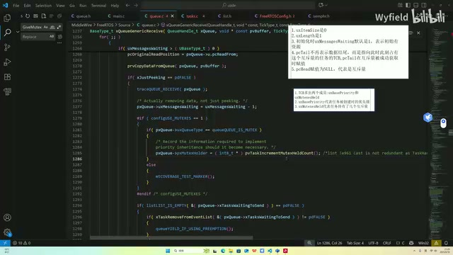
获取成功后的互斥量专用分支（原视频640×360，小字局部不清，截图用于定位原画面） · 原片 18:00
现在某个任务调用这个 Queue Receive 函数成功了，而且来到这里，那它肯定是 Current TCB，对吧？不然也不会来到这里，肯定是现在正在执行的任务。所以这里，就是 Current 任务的一个 TCB，这边的变量做一个加加，代表我现在又多持有了一个互斥量。
也就是这个：假如以刚才的情况为例，这是 Task B 的 TCB，那它就是 1，就加加了。然后这返回去的是一个指针，就是 Task B 的地址。那么我们就让互斥量的 Tail 指向 Task B，这已经指向了。既然它要指向它，我们后续通过这个指针，就能知道当前是 Task B 在拿着这个互斥量了。
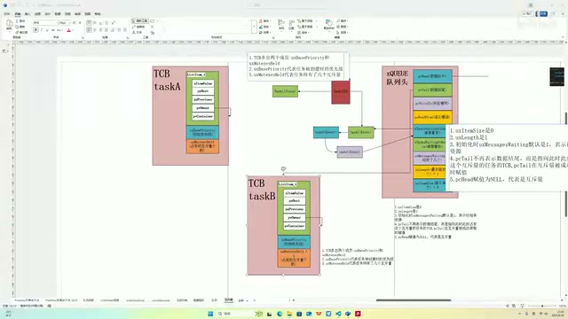
pcTail 指向持有者 Task B 的图解（原视频640×360，小字局部不清，截图用于定位原画面） · 原片 19:00
Task A 获取失败后进入继承路径¶
Task B 现在拿成功了，此时此刻它在用 I²C，还没用完、没释放。就是说 Task A 过来了。Task A 调用 Queue Receive 函数，发现失败了，它要做一个优先级的继承。我们看它是怎么做的。
失败了，那我们直接往下走。这边都讲过了，很熟悉了，这个分支跳过去，来到这。当这个宏被打开的时候，这里会做一个区分。首先也是判断一下 Head 指针：如果是 NULL，就确认是互斥量，然后进行一个优先级继承。
这个是判断一下人家传进来的是啥。Holder，就是 Tail，是吧？传进来的是 Tail。前面也说了，Tail 指向的肯定是当前占有互斥量的任务的 TCB，好不好？首先再判断一下它是不是 NULL，如果不是 NULL，就说明它指向某个 TCB。
事件列表项的优先级与事件组例外¶
然后接着来做。这个 pxTCB 所指向的，就是 Mutex Holder，就是传进来的，也就是当前持有这个互斥量的任务的 TCB。把它的优先级拿出来，和我们当前想拿互斥量而不成功的任务的优先级进行对比。如果发现它小于它，也就是这种情况：当前拿到的是 B，B 的优先级小于 A，就进行下一步判断。
它首先是想这样，肯定是要调用这一步的：Set Item Value，把 Event List 里面列表项的一个成员替换成 A，把它替换成 Task A 的一个优先级。这里就在干这个事情。
不过它在干之前，多了一层判断。它判断这个值的某一个位，是不是 1。这个是为啥呢？后面讲事件组的时候会给大家介绍：如果这个判定过不去，说明当前这个 TCB 的 Event List 是在事件组排队的。如果在事件组排队，就不能把 Event List 里面所代表的优先级变掉，否则会有问题。
如果不用事件组，那就能放下来，就把 Event List 的优先级变一下。Event List 这边再复习一下，前面也说了，各种各样的任务在各种队列里面排队的时候，是让 Event List 的列表项替它去排队的。然后 Event List 这个列表项里面的值，它就代表优先级。
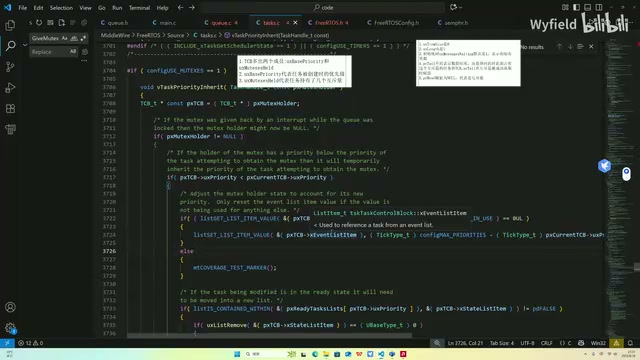
继承函数对事件列表项值及标志位的判断（原视频640×360，小字局部不清，截图用于定位原画面） · 原片 21:36
所以你如果想实现优先级继承，如果不把这个任务用于事件组的时候，那肯定 Event List 也要改。帮它排队的那个所代表的优先级，也要相应升高。不然你只把 TCB 里面的优先级改了，但它排队始终排不过去，也一直在死等，对吧？把优先级更高的也给阻塞了。
就绪状态与非就绪状态的两条分支¶
然后这一层判定，就是两个分支。判定 State List，就是当前持有这个互斥量的任务，它是否处于 Ready 状态，是否处于 Ready List 下。这个宏函数就在判断这件事，就这一行：它的 container 是否是这个 Ready List。
如果处于 Ready 列表下，就先拿出来，再赋值，再干这个事情。如果在 Ready 列表下，把它从 Ready 列表里面拿出来，然后再改优先级，这边就进行一个赋值。如果不在 Ready 列表下，就直接赋值。
这样就完成了一个优先级继承，对吧？Task B 的 TCB 里面的优先级，以及替它去各个队列里排队的这个 Event List 的优先级，都变得跟 A 一样了。那就能执行了。Task B 得到了提拔，能执行了。
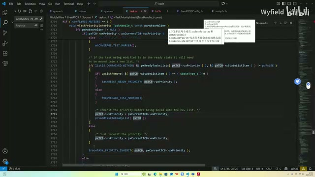
优先级继承中就绪列表成员判断与分支（原视频640×360，小字局部不清，截图用于定位原画面） · 原片 23:36
它执行了一段时间，把 I²C 用完了，就往里还了，也就是调用 Queue Send 函数，发送互斥量。发送成功之后，就会优先级恢复。看一下它是咋恢复的。
归还路径为什么还要检查 Head¶
在这，这是 Queue Send 函数。你发送成功了，就会来到这边，有区别的就在这。这里照例检查一下 pcHead 是否是 NULL。
简单说一下，为啥要看这个？因为这个 Item Size 是 0 的时候，有两种情况：第一种是互斥量，还有信号量的时候，也是 0。那信号量的时候，这个指针就不是 NULL。它不需要优先级恢复，也不用优先级继承这些机制，所以这边做一个判断。
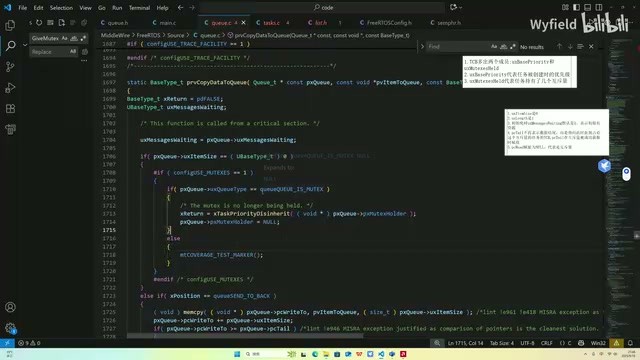
发送路径中 size 与互斥量类型判断（原视频640×360，小字局部不清，截图用于定位原画面） · 原片 25:00
然后我们看优先级恢复是怎么实现的。pxTCB 就是指向当前持有互斥量的任务，那其实就是 Task B，其实就是 Current TCB，对不对？只是现在它把我还回去了。还我的人肯定也是持有我的人，这个还，是 Current TCB 才能还；那持有我的，肯定也是 Current TCB。
你看这边，还有一个断言判断：持有这个互斥量的，肯定要是 Current TCB 才行。然后也就是 Task B 开始还了。
首先这个变量要减减吧？代表持有了几个互斥量的变量，要减减，它就减成零了，是吧？还了一个，要减一个，这个很自然。然后这边会做一个判断，确认是啥呢？就是我当前的优先级，不等于我一出生时的优先级，那说明我是被临时提拔的。我现在就要进行一个优先级恢复，就是回到我该去的地方。好，这个判断先不看，我们最后再来看。
首先，我此时此刻既然能还这个互斥量，那肯定是在一个 Ready 列表下。那我不仅要还互斥量，还要回到初始位置。我现在在这，要回到这，肯定要先从当前所在的 Ready 列表里面离开，对不对？就是在这，List Remove，让自己离开。
然后就是让自己当前的优先级，等于初始时的优先级，这就返回去了。前面也说了，Event List 就是替它去队列里面排队的列表项。在继承的时候，这个优先级也变了。现在优先级还回去了，替它排队的那个人也不能在这狐假虎威了，是吧？也要把这个优先级给它恢复回去，就是在这。
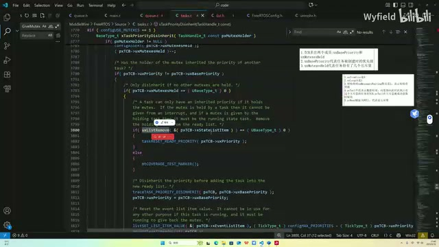
恢复基本优先级和事件列表项值的源码（原视频640×360，小字局部不清，截图用于定位原画面） · 原片 27:00
好，这就说完了。你看这样一下，优先级继承其实都结束了——不好意思，优先级恢复也都 OK 了。其实整个逻辑也就说完了。
为什么必须等 Mutexes Held 减到 0¶
然后最后再补讲一下：为什么要判定这个 Mutexes Held 等于 0 呢？这个其实也很简单，想象有一种这样的情况。假设有一个 Task，Task B、C……假设有个 Task E 吧。Task E 优先级不高，但是拿到的资源很多。比如说它把 I²C、串口、SPI，或者什么 Flash，还有各种应用层的一些东西都拿到手了。这个时候，我假设说这个 7 想用它，想用 I²C 了，就是这个 Task D 想用 I²C 了。但现在 I²C 在 Task E 手上，那就会把 Task E 临时提拔到它这。
过了一会儿，Task C 想用串口了，串口也在 Task E 这，那就会临时把它提拔到这。结果 A 到 C 这些所有的任务，所想用的互斥资源，全都在 Task E 手上。刚才的步骤就重复了很多次，直到最后 Task E 就有可能跑到最高优先级上。
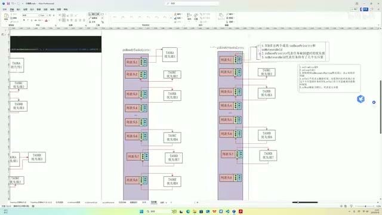
多个等待任务与 Task E 持有多个资源的示意（原视频640×360，小字局部不清，截图用于定位原画面） · 原片 29:36
也就是说，它会持有很多任务——它会持有很多互斥量。它这个 Held，因为每次拿到一个互斥量，就会加加；同时持有了很多，那这个值也很大，比如说是 80。
为什么要有刚才那个判断呢？刚才我们是在还 I²C。你不能说还了一个，就立马回去。你立马回去，那中间这些咋办？中间这些还想用串口，还想用 SPI，你这直接回去了，还是会出现优先级反转这样一个问题。
所以就要判断一下。因为每还一个会减减，那就是你如果是 10，肯定要还 10 次，减减 10 次。要确保你所有的都还出去了，再回到你一开始的优先级。所以这里减减之后，这边再判断一下。好，那其实整个互斥量，这些细节也讲完了。有了队列的基础，其实这些都是队列的变体，讲起来、理解起来也是非常轻松的，因为有前置知识了。
好，本节课把这个互斥量，从信号量开始，引入了优先级反转这样一个问题；然后又引入了我们的互斥量，介绍了一下互斥量解决优先级反转问题的方式，就是这两个方式。同时在源码上面，把这些技术细节都解释清楚了。
好，那这个互斥量的讲解就说完了。
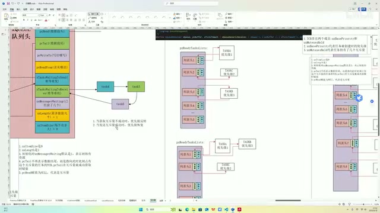
课程结尾回到互斥量结构与继承、恢复关系图（原视频640×360，小字局部不清，截图用于定位原画面） · 原片 30:48